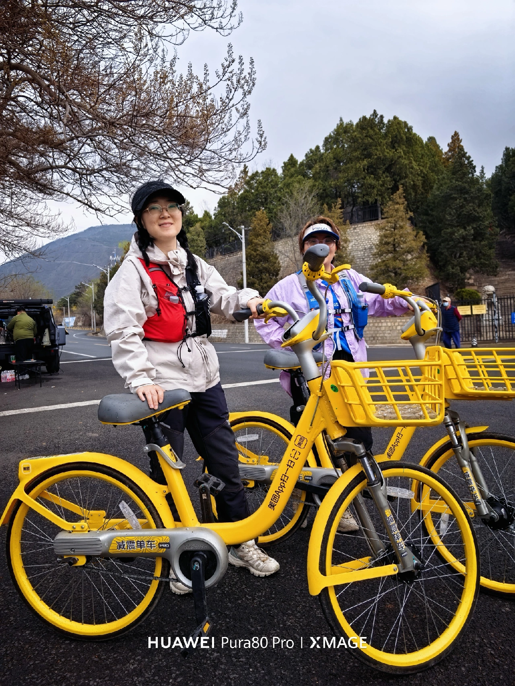

十三陵水库环湖亲子骑行 + 最轻松的五月湖边线
五月主题 · 离城最近、门槛最低的一条，很适合带娃或轻装半天到一天。
北京·昌平
十三陵水库环湖亲子骑行
6.0h
62km
12km / 80m / 1.6h
L4 可执行
五道口出发


行程卡
| 字段 | 内容 |
|---|---|
| 区域 | 北京·昌平 |
| 主题 | 十三陵水库环湖亲子骑行 |
| 总时长 | 6.0h |
| 预估自驾 | 62km |
| 骑行参数 | 12km / 80m / 1.6h |
| 强度 | 轻度 |
| 适合 | 亲子 / 恢复骑 / 不想把周末搞太累的人 |
| 一句话结论 | 如果你就想要一条离城近、强度低、湖边好懂的五月路线，十三陵水库几乎是默认答案。 |
路线摘要
如果你就想要一条离城近、强度低、湖边好懂的五月路线，十三陵水库几乎是默认答案。
🏞️ 目的地介绍
👨👩👦 十三陵水库的优势非常直接：近、平、好理解。它不像密云那样需要做很多补给准备，也不像官厅那样非常看风。对于带娃、恢复骑、或者只是想五月找个湖边活动一下的人来说，它的性价比很高。环湖 12km 这种量级，既有骑行感，又不会把一天搞得太满。
✨ 活动介绍
🌤️ 这条线最适合把节奏做轻：骑一圈，停几次，看看水面、吹吹风，再找地方吃饭或顺路加一点昌平片区的休闲内容就够了。它不需要被包装得太复杂，反而越简单越好。五月的它最好用来承接“我想出去，但不想折腾”的需求。
🍽️ 锚点补给
- 十三陵水库片区餐饮 · ★ — · 按当天高分店就近选即可
- 昌平咖啡/农家菜 · ★ — · 更适合灵活搭配，不必提前锁死
推荐行程安排
| 序号 | 活动 | 时长 | 备注 |
|---|---|---|---|
| 1 | 五道口出发，自驾去十三陵水库片区 🚗 | 1.0h | 离城近，出发压力最小 |
| 2 | 整车 / 热身 / 湖边慢骑 | 0.3h | 默认自带车，也可按当天片区租赁情况现看 |
| 3 | 环湖骑行 12km / 80m 🌊 | 1.6h | 亲子和恢复骑都友好 |
| 4 | 湖边休息 / 看景 / 拍照 📷 | 0.7h | 不用赶，慢慢玩更对味 |
| 5 | 昌平片区午餐或咖啡收尾 🍽️ | 1.0h | 可按当天状态灵活挑 |
| 6 | 返程回五道口 | 1.0h | 甚至能做成轻松半日线 |
默认都按五月周末的一日线来排：早出发、主骑行放上午和中午前后、下午留给吃饭和松弛收尾。
为什么这个方案值得保留
- 离城近，通勤成本最低，执行门槛很低。
- 强度轻，亲子和恢复骑都能接住。
- 五月不用走太远，也能有一条像样的湖边线。
风险与临门一脚
- 如果想要更强的骑行成就感，它会显得不够硬。
- 周末大众化路线，热门时段人会比较多。
- 更适合轻节奏，不建议强行叠太多第二活动。
证据入口
这批五月湖周骑行页优先做成轻量可发布版：先把路线、节奏、封面氛围和补给锚点整理出来；如果后面你要精修，我再继续补更重的点评信息卡和更多本地图。